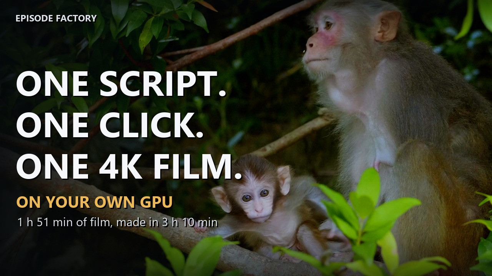

Episode Factory runs on your own Windows PC and your own NVIDIA graphics card. You attach a script and fifteen seconds of a voice, press Run, and it records the narration, checks every line against its own transcript, finds and judges the footage, and renders the film. One monthly plan, sized by the words you turn into film; every plan makes the same film.
Choose a plan Watch the demoMade for long-form narrated formats — sleep documentaries, nature and history films, the kind of episode that runs for an hour or two and is listened to as much as watched.

One program, one press. Every stage runs on your machine and leaves its evidence in the episode folder.
Paste or attach a script of any length. The program splits it into short pieces and plans the pictures from the words themselves — the place, the creatures, the subjects it names.
A local speech engine narrates in the voice of a fifteen-second clip you give it. Every piece is transcribed back and checked word by word; what does not match is recorded again.
Stock clips are fetched from free libraries for every subject, and a small vision model looks at a frame of each candidate before it is kept — the wrong place, people, cartoons and renders are refused.
The narration is mastered, the montage is cut to the words, and a quality gate refuses a film that is not complete. You get the film, the transcript and the chapter timestamps.
Hardware you own and two free accounts. Nothing inside the program is metered except the one number your plan is sized by: the script words you turn into film each month.
| Computer | Windows 10 or 11, with an NVIDIA graphics card. The program reads the card and adapts to it — a 12 GB card runs one speech engine, a 24 GB card two. The picture judge takes the card when there is room and the processor otherwise. |
|---|---|
| Disk | About 35 GB for the install (the speech engine and the vision model are fetched from their publishers once) and about 55 GB of working space while an episode renders. |
| Footage | A free Pexels API key (issued instantly with a free account). A Pixabay key is optional and also free. |
| Voice | Fifteen seconds of clean speech in the voice you want the narration in — yours, or one you have the rights to. |
| Internet | For the install and for fetching clips. The narration, the transcription and the render never leave your machine. |
Every plan makes the same film: any length, 4K, your own voice, every clip judged by its picture. Plans differ in one number, the script words you turn into film each month. Updates are included; cancel any time.
or £190 a year. About an hour of film a month: one long film, or four to six short ones.
or £490 a year. About four hours of film a month: two full-length films.
or £990 a year. About ten hours of film a month, for a channel network.
A one-time top-up, good for 90 days from the day you add it, spent after the month's own words: 5,000 words £12 · 10,000 words £24 · 20,000 words £39 · 50,000 words £79. Paste the code from the receipt on the Setup screen. If you need more every month, a larger plan costs less per word than packs.
Prices in GBP, VAT added at checkout where it applies. Checkout, billing and licence keys are handled by Lemon Squeezy, our merchant of record. The key is entered once during the install; the program shows your plan, the words left this month and the renewal date on its Setup screen. Change plan or cancel any time from the store's customer portal; a larger plan applies at once.
Only the script's words, once, when an episode is first run: a 20,000-word script is a two-hour film and 20,000 words of the month. Every later run of that episode — a repair, a refetch, a re-render — is free. Nothing else is metered: the voice and the transcript are made by programs on your own machine, and the clips come from free libraries under their free keys.
The program says so before it starts, with the numbers: how long the script is, how many words remain, and the renewal date. You can add a word pack, move to a larger plan (it applies at once), or wait for the renewal. Nothing already made is touched.
Any time, from the store's customer portal. A larger plan raises this month's words at once; a smaller one takes effect at the next renewal. If you cancel, the program stops starting new episodes when the paid month ends; your films, your episodes and your settings stay yours.
From Pexels (and Pixabay if you add its key), under their own licences, which allow use in published videos. Put a footage credit in your description; the program's documentation lists the vendors' terms with the dates they were read. Read them yourself before you publish for money — they are the vendors' terms, not ours.
Yes, for fetching clips and, on a plan, for the short check of your key each time you press Run. Narration, transcription, judging and rendering are local. The program checks for updates once a day; that check can be switched off.
No. A month is paid for and delivered as it runs, and all sales are final; cancel from the portal and the plan simply ends at the renewal. Check the requirements above before you buy; if the install does not complete on a machine that meets them, write to us with the install log and we will get it running with you.
Yes. Deactivate it on the old machine (one command, in the documentation) and activate it on the new one. Every plan runs on one machine at a time.
The speech engine narrates in the language of your script and your voice clip; the product is documented and tested in English.